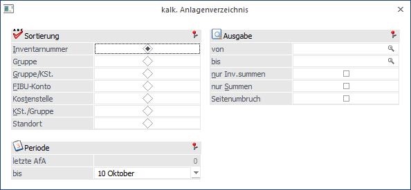
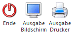
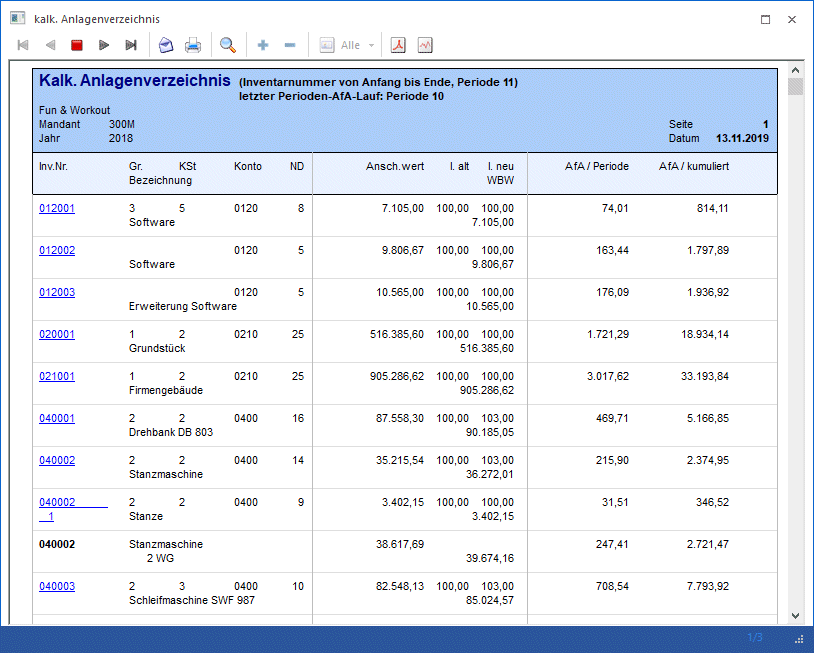

Das kalkulatorische Anlagenverzeichnis kann im Menüpunkt
1 Auswertungen
1 kalk. Anlagenverzeichnis
aufgerufen werden.
Dieser Punkt entspricht vom Auswertungsumfang dem Punkt Anlagenverzeichnis (im Menüpunkt Auswertungen).

Im Gegensatz zum steuerrechtlichen Anlagenverzeichnis erhalten Sie hier eine Liste der Anlagen, der Indices, der zum Wiederbeschaffungswert bewerteten Anlagen und der kalkulatorischen Abschreibung, die direkt in die mesonic Kostenrechnung übergeben werden kann.
Folgende Auswertekriterien können eingestellt werden
Ø Sortierung
Es besteht die Möglichkeit eine Sortierung nach der
ü Inventarnummer
ü Gruppe (Anlagengruppe, der das Inventargut im Anlagenstamm zugeordnet wurde)
ü Gruppe/KSt. (innerhalb der Gruppe nach der Kostenstelle)
ü FIBU-Konto
ü Kostenstelle
ü KSt./Gruppe (innerhalb der Kostenstelle nach der Gruppe)
ü Standort
vorzunehmen.
Ø von - bis
Je nachdem, welches Sortierkriterium gewählt wurde, kann der Ausdruck durch die hier einzugebenden Grenzen eingeschränkt werden. Haben Sie nach der Gruppe sortiert, druckt der Matchcode alle zur Verfügung stehenden Anlagengruppen an. Richtet sich die Sortierung nach dem FIBU-Konto, erhalten Sie über den Matchcode eine Übersicht aller in Frage kommenden FIBU-Konten. Das gleiche gilt für die Sortierung nach Kostenstellen (Kostenstelle von - bis) und nach der Inventarnummer (Inventarnummer von - bis). Für die Eingrenzung von - bis Standort steht eine Combobox mit den vorhandenen Standorten zur Verfügung.
Ø nur Inventarsummen
Es werden pro Inventargut nur Summen ausgewiesen, d.h. sollte es Subanlagen dazu geben, werden diese NICHT angezeigt.
Ø nur Summen
Wird diese Checkbox aktiviert, werden im kalk. Anlagenverzeichnis nur Summenwerte angezeigt.
Ø Seitenumbruch
Durch Aktivierung der Checkbox erhalten Sie einen Seitenvorschub pro Sortierung, z.B. pro Gruppe.
Periode
Ø Letzte AfA
Der letzte kalkulatorische AfA-Lauf wird angezeigt
Ø bis Periode
Periode, bis zu der die kalkulatorische AfA ausgewertet werden soll.
Buttons

Ø Ende
Das Fenster wird geschlossen, ohne dass ein Journal angezeigt wird.
Ø Ausgabe Bildschirm
Standardmäßig wird die Ausgabe auf dem Bildschirm vorgeschlagen, die auch durch Drücken der F5-Taste gestartet werden kann.
Ø Ausgabe Drucker
Die Vorschau wird am Drucker ausgegeben.
